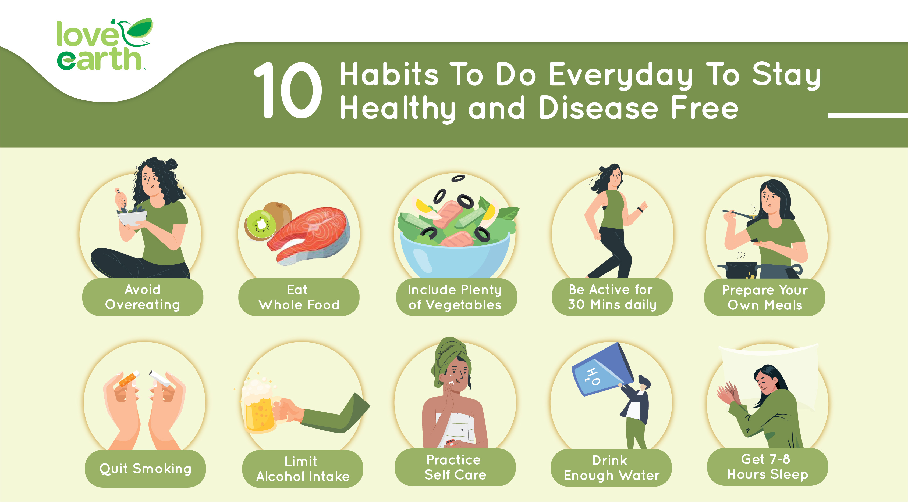

|

|
1. Avoid overeating
Create a meal schedule or sign up for a meal plan so you know what you'll be serving for the whole week.
2.Eat whole foods
Eat whole foods like fruits, vegetables, nuts, seeds, beans, poultry and fish
to help you lose weight and improve overall health.
3.Including plenty of vegetables
Vegetables contain nutrients and antioxidants such as carotenoids, polyphenols, folate,
and vitamin C. According to the Food Pyramid Malaysia 2020, eating at least 3 servings of
vegetables a day will improve the body's ability to combat disease.
4.Be active for 30 minutes daily
According to the Malaysian Dietary Guidelines, we should engage in at least 30 minutes
of moderate-intensity physical activity 5-6 days per week (preferably daily). Aerobic exercise,
brisk walking, badminton, skipping rope, football and cycling are great examples.
5.Quit smoking
Quit smoking also adds as much as 10 years to your life, compared to if you continued to smoke.
The benefits will help stop the damaging effects of tobacco on how you look, lowers your risk of
diabetes, helps blood vessels work better, helps in the heart and lungs, and lower the risk of other
cancers over time.
6.Limit alcohol intake
It’s recommended in moderation or limiting to 2 drinks or lesser in a day for men and 1 drink or lesser
per day for women, on days when alcohol consumed.
7.Practice self-care
Physical self-care includes how you're fueling your body, how much sleep you're getting, how
much physical activity you are doing, and how well you're caring for yourself. Emotional self-care
may include helping coping skills that help you acknowledge and express your feelings regularly.
8.Drink enough water
The Food Pyramid Malaysia 2020 recommended the intake of 6-8 glasses of plain water a day.
Adequate water intake can ensure your body stays hydrated to maintain health.
9.Prepare your own meals
Eat fewer calories and avoid the chemical additives, added sugar, and unhealthy
fats of packaged and take out foods that can leave you feeling tired, bloated, and irritable,
and exacerbate symptoms of depression, stress, and anxiety.
10.Get 7-8 hours sleep
Sleep is crucial for regulating cell functions and helping your body heal.
Developing a sleep routine that includes 7-8 hours of sleep each night may help you live longer.
Other healthy habits you should adopt include eating slowly and mindfully,
limiting snack foods, consuming less added sugars, and so on. All these habits can help you live longer
and free from disease.